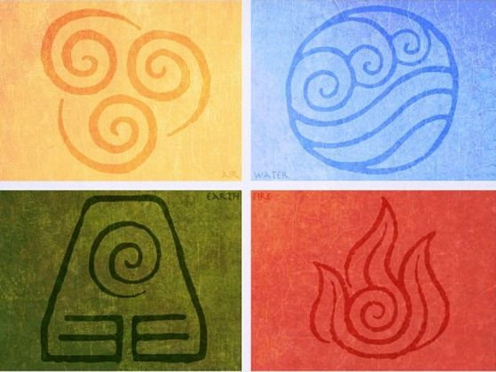

.jpg)
My Favorite Series is Avatar The Last Airbender. I first watched it last year in September and I have been a fan of this show ever since. There are many reasons why this show became my favorite. The first reason is that there is a lot of cultural representation in this show. In Avatar the Last Airbender (or ATLA for short) each of the nations in their world is based on different countries and Nations in the real world.
Fire Nation is based in Japan, the Earth Nation is based in China, the Water Tribe is based on Inuit people, and the Air Nation is based on Tibetan cultures. The next reason is because of Character Redemption Arcs. There were many characters who had started out evil and then became good in this show. The last reason is ATLA was realistic for each type of bending form there was a type of martial arts behind it. Water bending is based on tai chi chuan, earthbending is based on Hung Ga kung fu, firebending is based on Northern Shaolin kung fu, and airbending is based on baguazhang.
This show is a good show for both kids and adults and I recommend watching it. Lastly, if you decide to watch this show be sure to read the comics IN ORDER before going on to the next show which is Legend of Korra. Legend of Korra talks about the Next avatar.
